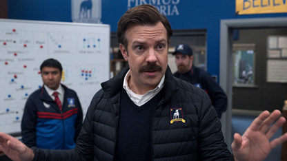
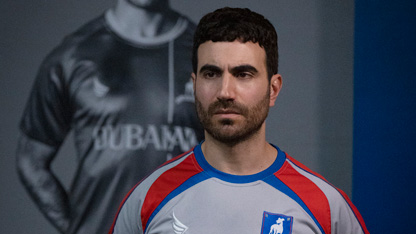
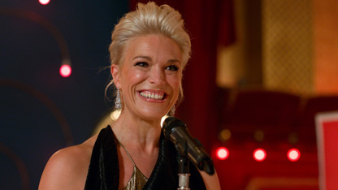
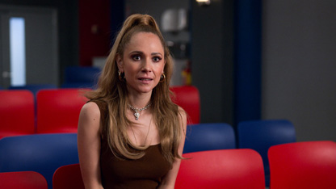

Main Characters
The heart and soul of Ted Lasso is its characters. A cast of fairly complicated, seemingly real people, whose lives are all impacted by Ted throughout the first season. The growth and change of each character is truly what makes the show worth watching, every character has a good arc and it is a blast to watch it happen.
Ted Lasso
The main character and namesake of the show (played by Jason Sudeikis), Ted is an American college football coach, hired to coach a professional (Premiere League) soccer team in West London, F.C. Richmond. Ted makes dumb jokes when no one wants to hear them, but has such charm that he knows he can win anyone over. "The Lasso Way" always prevails.
Roy Kent
Roy is one of the main soccer players in the show (played by Brett Goldstein), he's the team's captain. A grumpy but lovable guy who is getting a little too old for the sport and trying to figure out what the rest of his life will look like after he retires. Roy is one of the realest characters in modern television, he reacts and changes in ways that make the viewer love him more and more with each watch.
Rebecca Welton
The new owner of F.C. Richmond after winning the team in a recent divorce, Rebecca (played by Hannah Waddingham) hires Ted to coach a failing team in hopes of shaking things up.
Keeley Jones
The girlfriend of one of the players (Jamie Tartt), Keeley (played by Juno Temple) is the team's PR manager and emotional support.
